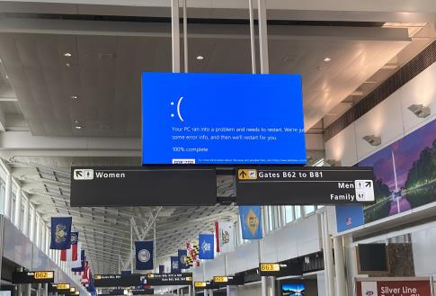
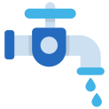
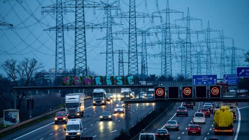

Deutschlands KRITIS im digitalen Zeitalter:
Fortschritt mit Risiken?
Dieser Beitrag erschien ursprünglich im Spickzettel/Dezember 2024. Zur Originalausgabe
Und all dies wegen eines einzigen Fehlers eines einzigen Systems. Klar, derartigen Vorfällen stehen vielfältige Präventionsmaßnahmen entgegen und damit kommt ein IT-Fehler dieses Ausmaßes auch nicht allzu oft vor. Aber wenn, dann führt er zu erheblichen Konsequenzen. Und dabei ist noch nicht einmal die Rede von professionellen Hackern, gar zum Cyberwar staatlich angeheuerten (vgl. Spickzettel Winter 2023, S. 14f.).
Zur kritischen Infrastruktur (KRITIS) gehören Anlagen, Systeme und Dienstleistungen, deren Ausfall oder Beeinträchtigung gravierende Folgen für die öffentliche Sicherheit, Gesundheit, das wirtschaftliche Wohlergehen oder die staatliche Funktionsfähigkeit hätte. Dazu zählen in Deutschland zehn Sektoren, deren digitale Vernetzung – aus der sich unsere Abhängigkeit von diesen digitalen Systemen ergibt – folgend grob aufgelistet wird.
Voran gilt es noch einen Punkt zu er wähnen: das Zweite Gesetz zur Erhöhung der Sicherheit informationstechnischer Systeme“, umgangssprachlich auch IT-Sicherheitsgesetz 2.0 genannt. Dieses im Mai 2021 in Kraft getretene Gesetz setzt allen Anbietern kritischer Infrastruktur einheitliche Sicherheitsstandards und regelt somit ein klein wenig mehr Immunität gegen Cyberangriffe. Wie wirksam es ist und ob die Regelungen genügen, darüber wird noch diskutiert.
1. Energie und 2. Wasser
Das deutsche Stromnetz ist, im Vergleich zu anderen Ländern, mit rund 800 Verteilnetzbetreibern relativ dezentral aufgebaut. Die Wasser, Gas- und Fernwärmeversorgung beläuft sich ebenfalls auf viele verschiedene Systeme, Öl-/Kraftstoffe allerdings unterliegen wegen großer Pipelines und Raffinerien einer zentralen Steuerung. Ein großflächiger Angriff müsste also viele verschiedene Anbieter mit unterschiedlichen Sicherheitsstrukturen und deren jeweiligen Servern umfassen. Dies macht es komplexer, zeit- und kostenaufwendiger. Dass auch solch dezentrales System trotzdem angreifbar ist, zeigt ein Angriff russischer Hacker auf das ukrainische Energienetz 2015. Damals waren rund 189 Städte im totalen Blackout, weil Mitarbeiter von Netzbetreibern Word-Dateien einer fälschlichen E-Mail geöffnet hatten. Inwiefern das bei unserem Stromnetz möglich ist, ist nur schwer abzuschätzen.
3. Informationstechnik und Telekommunikation
Für diesen Sektor haben wir hierzu lande ein eigenständiges Bundesamt, das Bundesamt für Sicherheit in der Informationstechnik (BSI). Zu seinen Aufgaben gehört eine sichere Gestaltung der Digitalisierung durch „Prävention, Detektion und Reaktion für Staat, Wirtschaft und Gesellschaft“, so das BSI selbst in seinem Leitbild. Das BSI hat in den vergangenen Jahren für vielfältige Anforderungen an deutsche Telekommunikationsanbieter gesorgt und u.a. Notfallsysteme für den Fall eines Hackerangriffes geschaffen. Vielmehr liegt hier das Risiko bei den Bürgern, welche statt sicherer und zuverlässiger Kommunikationsanbieter beispielsweise auf US-amerikanische Anbieter wie WhatsApp zugreifen. Diese sind u.a. vor allem der vollen Transparenz ihrer eigenen Geheim dienste verpflichtet und könnten auch jederzeit ihren Dienst in Deutschland einstellen.
4. Transport und Verkehr
Unsere Straßen sind weitreichend analog, nichts desto trotz ist dieser Sektor sehr stark von den anderen abhängig: Immer tiefgreifender sind in Autos Computer eingebaut – und Computer sind fernsteuerbar. Damit wird ein innovatives, intelligentes Auto zur Anschlags-Drohne. Auch werden immer größere Teile des deutschen Ampelsystems vernetzt. In den Niederlanden fanden Experten heraus, dieses „intelligente“, automatische Ampelschalten sei recht einfach zu beeinflussen. So sendeten sie manipulierte Daten vorgetäuschter Fahrradfahrender an das System, welches daraufhin für diese grün schaltete. Damit war es den Forschern möglich, indirekt sämtliche untersuchten Kreuzungen zu steuern. Für diese simple Manipulation hängt sehr viel unserem Verkehr ab; nicht zuletzt auch unsere Grundversorgung und das Rettungs- sowie Gesundheitswesen.
5. Gesundheit
Krankenhäuser und die Bestellung von Medikamenten sind weitgehend digital organisiert, was sie grundsätzlich angreifbar macht, man denke an die „WannaCry-Attacke“ im Jahr 2017, bei der 48 britische Kliniken zeitweise nicht einmal Akutpatienten aufnehmen konnten und kritische Operationen verschieben mussten. Jedoch finden sich immer wieder verschiedene Programme zum Schutze dieses Sektors, darunter ein Programm zur Unterstützung des Risikomanagements medizinischer Einrichtungen vom Bundesamt für Bevölkerungsschutz und Katastrophenhilfe (BBK) und einzelnen Ländern. Andere Stellen unseres Gesundheitssystems, wie die Expertisen von Hausärzten, sind größtenteils analog geblieben, was wir wohl der besonderen Affinität der CDU zum Digitalen zu verdanken haben.
6. Medien und Kultur
Ja, auch Medien und Kultur sind wegen ihrer Vermittlung von Information, Geschichte und Identität in einer offiziellen Liste des BSI zur KRITIS vertreten. Doch gerade mit Blick auf die Dimensionen des Internets und die „Sozialen Medien“ hängen seriöse Informationen am seidenen Faden. Auch klassische kulturelle Medien wie das Theater verlieren zunehmend an Bedeutung, was jedoch nicht heißt, dass wir an Kultur verlieren. Nur übertragen wir diese immer weiter ins Digitale, was noch ein weiteres Mal die Notwendigkeit von sicheren Medien betont. Ein Teil dieser Medien kommt jedoch von ausländischen Servern, welche damit weder unserer Beeinflussung noch der unserer Legislative unterliegt.
7. Ernährung
Auch unsere Ernährung wird maßgeblich durch die digital organisierte Vernetzung bestimmt. Eine Lahmlegung des Strom-, Kommunikations- oder Verkehrswesens hätte Engpässe in Supermärkten zur Folge – was dann? Für Situationen wie diese sind glücklicherweise umfangreiche Notfallsysteme vorgesehen, so ist genau bestimmt, wie Städte notfalls mit Lebensmittelgesellschaften Grundnahrungsmittel verteilen. Gehen wir jedoch von einem vollständigen Ausfall der Kommunikation oder des Verkehrs aus, sind auch diese keine langfristige Alternative.
8. Finanz- und Versicherungsdienstleister
Diese sind essentiell für unsere Wirtschaftskreisläufe. Könnten die Bankautomaten kein Bargeld mehr ausgeben und wären auch digitale Zahlungssysteme unbrauchbar, wären wir teilweise wieder in einer Tauschgesellschaft, was spätestens bei den Lieferstrukturen unmöglich wäre, weshalb auch für diese konkrete Notfallbestimmungen gesetzt sind. Auch gibt es verschiedene Programme, um das nahezu unangreifbare Bargeld in Notsituationen zu fördern. Allgemein kann man sagen, dass der Finanzsektor zu den am besten gesicherten gehört.
9. Siedlungsabfallentsorgung
Auch die Abfallentsorgung gehört zur KRITIS. Grund dafür: Störungen oder gar Ausfälle könnten zu erheblichen gesundheitlichen Gefährdungen der Bevölkerung führen, so das BSI. Und vor allem Recycling- oder Müllverbrennungsanlagen sind digital gesteuert. Doch auch hier ist Dezentralität der Schlüssel; so ist die Abfallentsorgung kommunal organisiert, was einen flächendeckenden Angriff sehr komplex gestalten würde. 10. Staat und Verwaltung Hauptrisikofaktor dieses Punkts ist wohl eine fehlende Kommunikation. Das betrifft sowohl die Erreichbarkeit von Notdiensten, als auch ganz allgemein das Notfallmanagement des Staates, vom Organisieren einer stabilen Versorgung über die Gewährleistung von Energie und Wasser. Doch auch diese Systeme sind entweder auf ihre Eigenständigkeit ausgelegt – so wissen große Super marktketten schon im Voraus über die notwendigen Schritte im Falle von Engpässen Bescheid – oder aber den notwendigen Schutz gegen digitale Angreifer.
Fazit
Langer Text, kurzer Sinn: Selbst hier zulande, wo „das Internet für uns alle Neuland“ (A. Merkel) scheinen mag, sind weitgehende Teile der KRITIS digitalisiert und damit durch weit entfernte Angreifer erreichbar. Dies ist inzwischen in der Politik angekommen, in welcher sich zwar einzelne Politiker zumindest öffentlich interessiert zeigen, die Thematik meist aber eher klein gehalten wird.
Jeremias Ruff, in: Spickzettel
2024/12


